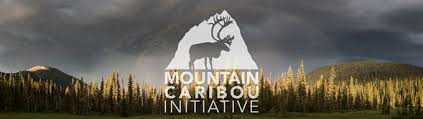

Mountain Caribou


A mountain caribou in British Columbia reaches for a cluster of the tree lichen, its only food through harsh winters. The felling of old-growth trees that provide the lichen has altered the forest ecosystem, attacting other herbivores-and predeators. Increasingly scarce in the Lower 48, elusive mountain caribou have been called "gray ghosts."
A mountain caribou in British Columbia reaches for a cluster of the tree lichen, its only food through harsh winters. The felling of old-growth trees that provide the lichen has altered the forest ecosystem, attacting other herbivores-and predeators.
A mountain caribou in British Columbia reaches for a cluster of the tree lichen, its only food through harsh winters. The felling of old-growth trees that provide the lichen has altered the forest ecosystem, attacting other herbivores-and predeators. Increasingly scarce in the Lower 48, elusive mountain caribou have been called "gray ghosts."
A Lone Mountain Caribou
A lone mountain caribou passes young trees in the Canadian Rockies, where climate change and human action profoundly altered the ecosystem.
A Lone Mountain Caribou
A lone mountain caribou passes young trees in the Canadian Rockies, where climate change and human action profoundly altered the ecosystem.